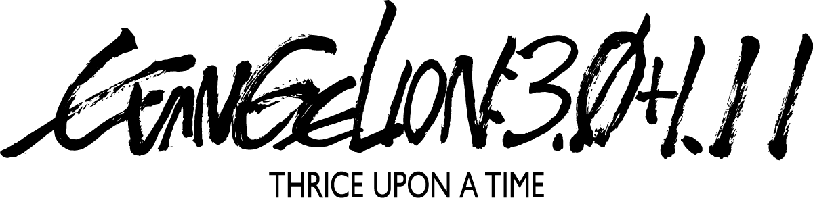
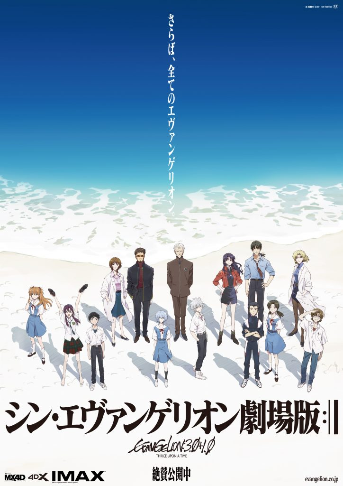

Ⅰ
巴黎与第3村
开场的巴黎作战中，WILLE 恢复城市的防御系统，真希波驾驶8号机抵挡 NERV 的攻击。镜头随后转向日本的第3村。
真嗣、明日香与绫波（暂称）来到幸存者生活的第3村。东治成为医生，与班长洞木光组成家庭；剑介承担维修等工作。曾经的同龄人已经进入成人生活，真嗣却仍被薰之死与此前的灾难困住。
绫波在村里学习田间劳作、照顾孩子，与村民交往，也请真嗣为自己取名字。离开 NERV 的维护环境后，她无法继续维持身体，最终在真嗣面前消失。

新·福音战士剧场版终

《终》承接《Q》。真嗣、明日香与绫波（暂称）来到第3村；与此同时，WILLE 正在准备与 NERV 的最后一次作战。
影片是新剧场版四部曲的第四部。故事从幸存者聚居的村庄展开，随后转向南极作战、父子对话与最后的车站。
开场的巴黎作战中，WILLE 恢复城市的防御系统，真希波驾驶8号机抵挡 NERV 的攻击。镜头随后转向日本的第3村。
真嗣、明日香与绫波（暂称）来到幸存者生活的第3村。东治成为医生，与班长洞木光组成家庭；剑介承担维修等工作。曾经的同龄人已经进入成人生活，真嗣却仍被薰之死与此前的灾难困住。
绫波在村里学习田间劳作、照顾孩子，与村民交往，也请真嗣为自己取名字。离开 NERV 的维护环境后，她无法继续维持身体，最终在真嗣面前消失。
真嗣选择与明日香返回 WILLE。舰上有人因近第三次冲击失去了家人，愤怒不会因为他回来就消失。WILLE 发动最后的作战，明日香为突破局面释放封印在眼中的使徒力量，却落入碇源堂预设的局面；第13号机启动，源堂的计划继续推进。
真嗣主动提出驾驶初号机、面对父亲，舰上的冲突随之爆发。美里为他挡下枪击，也重新承担自己当年鼓励他行动的责任。随后，真嗣进入初号机，追向源堂。
真嗣进入反宇宙，驾驶初号机与源堂驾驶的第13号机交战。两台机体像互为镜像，场景在城市、房间和近似摄影棚的空间之间切换。打碎的布景让“这是被制造出来的世界”直接显露出来。
当力量无法结束冲突，真嗣开始听父亲说话。源堂讲述自己的孤独、与唯相遇后获得的联结，以及失去她之后对现实的拒绝。他说明了自己推动补完计划、试图再次见到唯的动机。
美里以 Wunder 的牺牲为代价，把人类创造的新枪送到真嗣手中。真嗣选择让 EVA 从世界中消失，并在这一过程中与明日香、薰和绫波告别。
唯与源堂接过最后的牺牲，真嗣得以生还。真希波前来接他，画面从海滩、线稿与简化的绘画空间，走到成年真嗣所在的车站。她取下他的 DSS 项圈，两人跑出车站；画面最终切换为实拍城市。
结局详述 ↘人物经历与配音资料
真嗣在第3村与东治、剑介重逢，暂住在剑介家中。经历绫波（暂称）的死亡后，他随明日香返回 WILLE，并主动提出驾驶初号机。
在反宇宙中，他与源堂交战，随后听父亲讲述过去。结尾，真嗣选择消除 EVA，以成年形象出现在车站。
配音：绪方惠美；成年真嗣：神木隆之介本片中出现了第3村的绫波（暂称），以及《破》中留在初号机内的绫波丽。两者具有不同的经历。
绫波（暂称）在村里劳动、与村民交往，希望获得自己的名字。最后，真嗣将她在村中的经历告诉另一位绫波，并与后者告别。
配音：林原惠美明日香在第3村暂住于剑介家中，随后返回 WILLE 参加作战。她释放封印在眼中的使徒力量，但被第13号机制服。
影片交代了式波系列的背景。结尾的海滩场景中，真嗣回应了她过去的感情，并将她送离反宇宙。
配音：宫村优子源堂推动补完计划，试图再次见到唯。在反宇宙与真嗣对话时，他讲述了自己的童年、与唯的相遇，以及唯消失后与儿子的疏离。
最后，源堂与唯接过真嗣原本准备承担的牺牲。
配音：立木文彦薰在结尾与真嗣、加持交谈，谈及自己希望让真嗣幸福的愿望。场景再次出现棺材与重复相遇的意象。
最终的车站画面中，他与绫波出现在对面站台。
配音：石田彰真希波在巴黎作战中驾驶8号机，之后参与 WILLE 的行动。她约定在最后接回真嗣，并进入反宇宙寻找他。
车站场景中，她取下真嗣的 DSS 项圈，两人一起跑出站台。
配音：坂本真绫美里指挥 WILLE 对抗 NERV。真嗣提出再次驾驶 EVA 时，她为他挡下枪击，并承认自己在此前事件中的责任。
最后，她驾驶 Wunder 完成制造新枪的行动，将其送往真嗣所在之处，自己随舰牺牲。
配音：三石琴乃真嗣选择消除 EVA。影片随后呈现了他与各位人物的对话，以及成年真嗣所在的车站。
真嗣没有把所有人永远收拢在一个消除边界的共同体里。他选择消除 EVA，给众人一个不同的未来。唯和源堂接过牺牲，真希波履行约定，真嗣最终以成年形象出现在车站。
对面站台上可见明日香、绫波与薰。真希波为真嗣取下项圈，两人跑出站台。真实城市的镜头接替动画，结束了观众熟悉的表现形式。
车站既可以是叙事中的新世界，也可以被看作连接作品与现实的门槛。项圈被取下，是一道具体束缚的解除；“驾驶员”的身份不再是人生必须履行的任务。
线稿、片场、胶片式的回顾与实拍，把制作作品这件事也带进结尾。告别可以同时属于角色、创作者和观众。这是对影像形式的一种解读。
电影呈现了消除 EVA 的过程，以及成年真嗣所在的车站，但没有逐项说明新旧世界的时间关系、人物记忆是否保留。因此，“全部重置”仍是解释之一，不能视为影片明确交代的完整机制。
第3村段落以田间劳动、用餐和村民交往为主。场景集中在田地、住宅与诊所，与后半段的舰船作战和反宇宙空间形成节奏上的对比。
反宇宙中的战斗场景显露出摄影棚与模型布景的质感。结尾则先后出现完整上色的画面、简化的线稿和实拍城市，让不同的影像形式直接出现在同一段落中。
电影配乐由鹭巢诗郎创作，主题曲《One Last Kiss》由宇多田光演唱。官方音乐页面收录了相关唱片与发行信息。
查看官方音乐资料 ↗这些编号对应同一部完结篇的不同修订版本，并非三部续集。3.0+1.0 是最初的剧场版本；3.0+1.01 是此后的调整版本；3.0+1.11 用于影碟发行。本页沿用原作电影名称，首屏手绘标题取自发行商提供的 3.0+1.11 影碟版素材。它也不同于 1997 年的《The End of Evangelion》，后者属于另一套作品脉络。